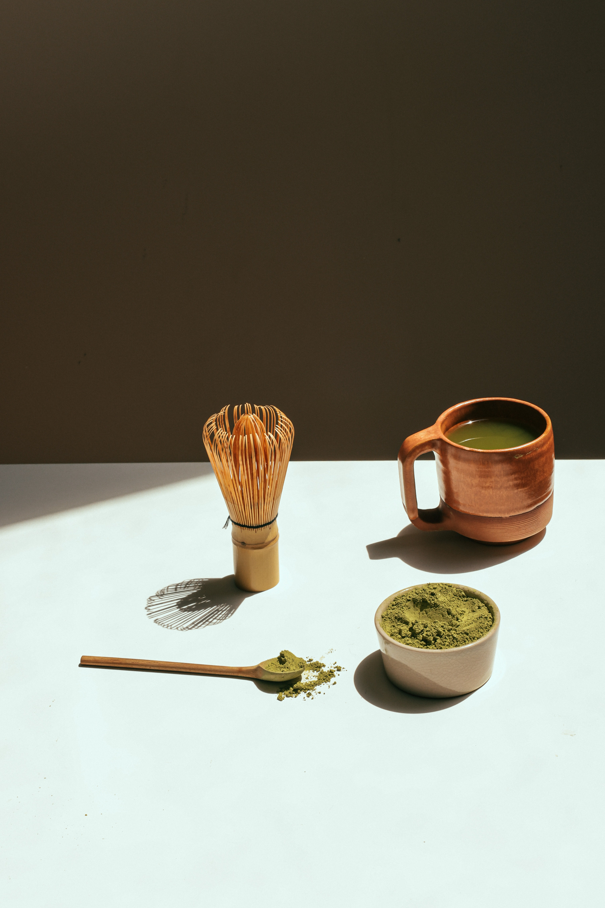
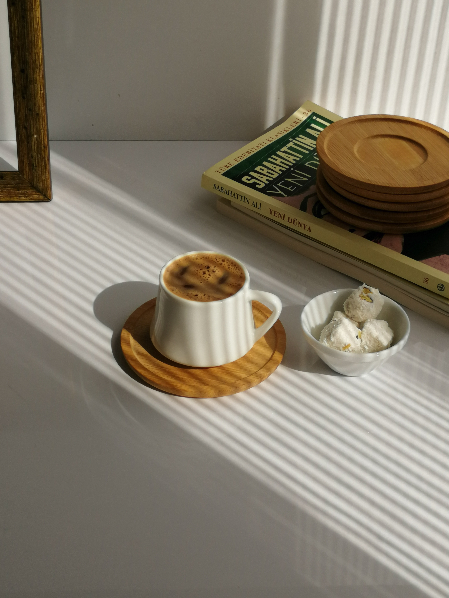

Weekend Book Summary

FAKTA FAKTA AKHIR
fakta fakta dalam pengemasan website, yang pertama adalah penerapan tampilan halaman depan , kemudian pemolesan grafik tampilan dan pernak perniknya. kemudian dari pada itu, kita harus mempertimbangkan akan banyaknya jumlah pengunjung.fakta fakta dalam pengemasan website, yang pertama adalah penerapan tampilan halaman depan , kemudian pemolesan grafik tampilan dan pernak perniknya. kemudian dari pada itu, kita harus mempertimbangkan akan banyaknya jumlah pengunjung fakta fakta dalam pengemasan website, yang pertama adalah penerapan tampilan halaman depan , kemudian pemolesan grafik tampilan dan pernak perniknya. kemudian dari pada itu, kita harus mempertimbangkan akan banyaknya jumlah pengunjung fakta fakta dalam pengemasan website, yang pertama adalah penerapan tampilan halaman depan , kemudian pemolesan grafik tampilan dan pernak perniknya. kemudian dari pada itu, kita harus mempertimbangkan akan banyaknya jumlah pengunjung.fakta fakta dalam pengemasan website, yang pertama adalah penerapan tampilan halaman depan , kemudian pemolesan grafik tampilan dan pernak perniknya. kemudian dari pada itu, kita harus mempertimbangkan akan banyaknya jumlah pengunjcla.fakta fakta dalam pengemasan website, yang pertama adalah penerapan tampilan halaman depan , kemudian pemolesan grafik tampilan dan pernak perniknya. kemudian dari pada itu, kita harus mempertimbangkan akan banyaknya jumlah pengunjcla.

FAKTA FAKTA AKHIR
fakta fakta dalam pengemasan website, yang pertama adalah penerapan tampilan halaman depan , kemudian pemolesan grafik tampilan dan pernak perniknya. kemudian dari pada itu, kita harus mempertimbangkan akan banyaknya jumlah pengunjung.
